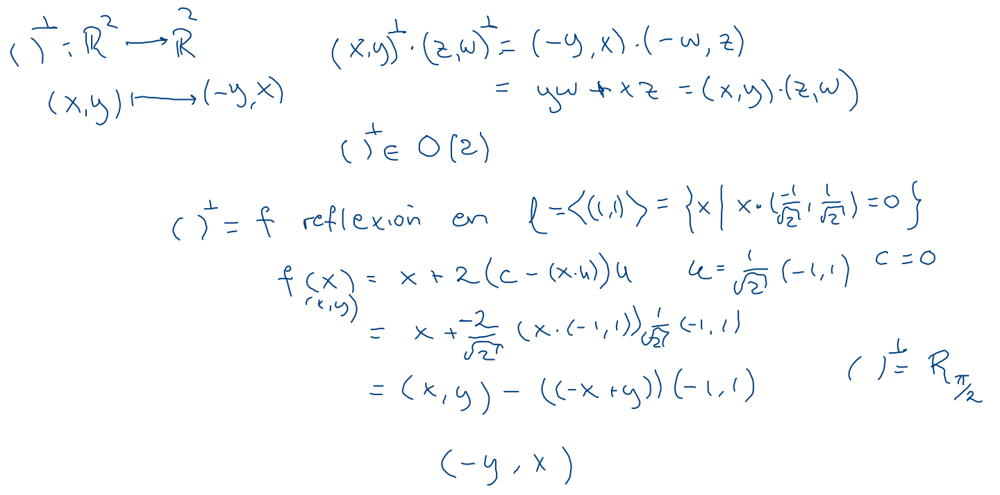
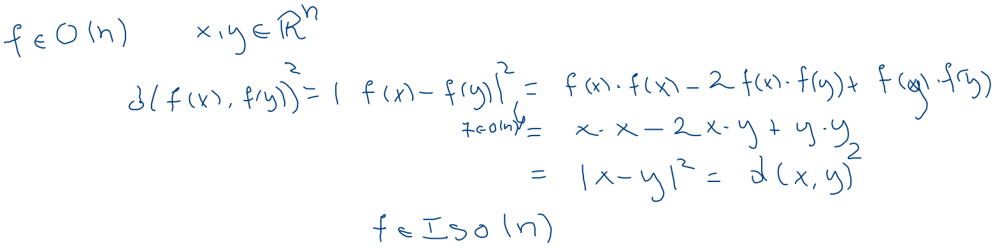

- Reflexiones en el hiperplano Πu,c={x∈Rn∣u⋅x=c}, con u∈Rn unitario (∣u∣=1) y c∈R: φ(x)=x+2(c−u⋅x)⋅u, son isometrías que no forman grupo.
- Simetrias Dada F⊂Rn Sim(F)={f∈Iso(n)∣f(F)=F}
- Cíclico Cn y diédrico Dn de ordenes n y 2n, respectivamente.
Ortogonales
Preservan el producto interior:
O(n)={f:Rn→Rn∣v⋅u=f(v)⋅f(u)∀u,v∈Rn}
- El compadre ortogonal ()⊥∈O(2), es R2π y reflexión por ⟨(1,1)⟩

Proposiciones
- O(n)⊂Iso(n). 
- f∈Iso(n), tal que f(0)=0, entonces f∈O(n).
- f∈Iso(n), entonces existen únicas, g∈O(n) y b∈Rn, tales que f=Tb∘g:Rnx→Rn↦g(x)+b.